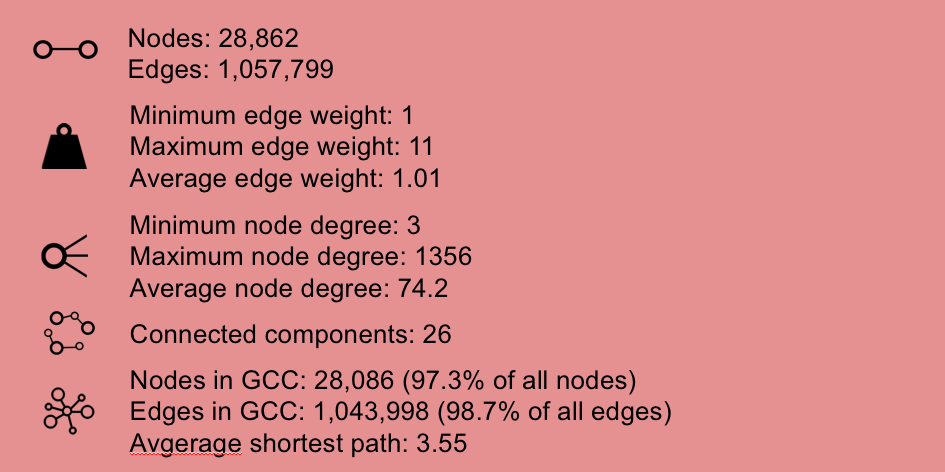

Statistics
Hej hej
Overview
First, let's see in which countries these 1000 top rated movies on IMDB have been produced.
The red dots on the map indicate, that at least one of the movies was made in that country, and the bigger the dot,
the more movies have been produced in the respective country. The plot shows that the majority of the top rated movies on the IMDB list is
produced in USA. This must be expected, since the movie industry in Hollywood is very big and thus, it is natural that many of the top rated movies
are produced here. However, the plot also shows that severa movies on the list have been producd in the United Kingdom, India and Japan.

Next, we want to get an overview of how much the movies have cost to produce and how much revenue they have generated. This is shown in the table
below together with an overview of the average sentiment scores of the movies. The average sentiment scores is based on the plot synopsis of
the movies together with the keywords listed for each movie. The table shows, that there is a very large span between the movies that have been
most and least expensive to produce just like the span for the income is very big. This should of course be considered in the light of the movies
being released between the 1920s and 2020, so inflation should naturally be considered when evaluated the numbers. However, there is span is still
very large, so in Genres we will further investigate if some type of movies are more expensive to prodcue than other.
To dig deeper into the sentiment scores of the movies the three happiest and three saddest movies, based on these average sentiment scores, are shown below.
The table shows that the happiest movie is Mary Poppins , which indeed is known to be a very happy movie. The names of the two saddest movies,
The Raid: Redemption and I Saw the Devil, includes words that are usually associated with something negative, so it makes sense that
these are listed as the most sad movies.
Since we wish to look at the network of actors, we also find the happiest and saddest actors. This is based on the average sentiment scores of the movies they have starred in. We choose to only include actors that have starred in at least five of the movies on the IMDB list, since otherwise actors that have only starred in one, very happy movie will be considered the most happy and similar for the saddest. The table below shows the happiest and saddest actors based on this. It is shown that the span between the happiest and saddest actors is quite low, which suggests that the actors both appear in happy and sad movies.
Since we wish to look at the network of actors, we also find the happiest and saddest actors. This is based on the average sentiment scores of the movies they have starred in. We choose to only include actors that have starred in at least five of the movies on the IMDB list, since otherwise actors that have only starred in one, very happy movie will be considered the most happy and similar for the saddest. The table below shows the happiest and saddest actors based on this. It is shown that the span between the happiest and saddest actors is quite low, which suggests that the actors both appear in happy and sad movies.
